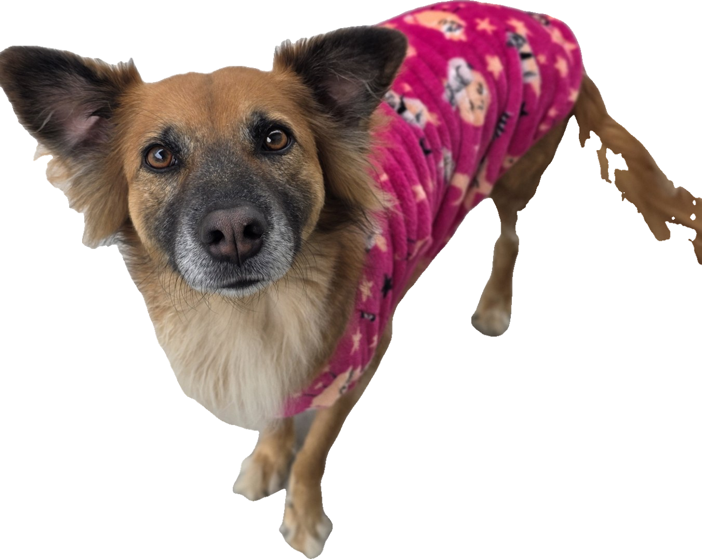

by barbara f tatsch //@barbarafonsecavetArrastaAntes de responder, eu te faço 4 perguntas.
Ele vai pra rua todo dia? Convive com outros cachorros? Já teve pulga ou carrapato? Tem quintal?
Passeia em parque, vai pro sítio, convive com muitos bichos?
Geralmente precisa de proteção o ano inteiro.
Apartamento, quase não sai, nunca teve pulga?
Pode não precisar. Aí a gente combina o que faz sentido pra ele.
O carrapato.
Ele aparece mais no calor e transmite doença séria. Verão em Curitiba pede atenção, mesmo pra quem quase não sai.
Eu não dou nome de produto aqui.
O antipulgas certo é o que eu escolho olhando o seu cachorro.
Me manda a rotina dele no direct.
Eu te digo por onde começar.